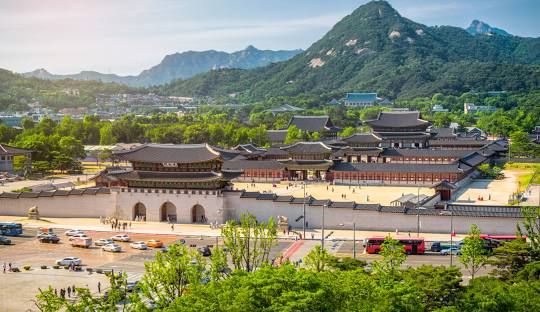
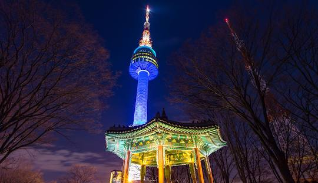
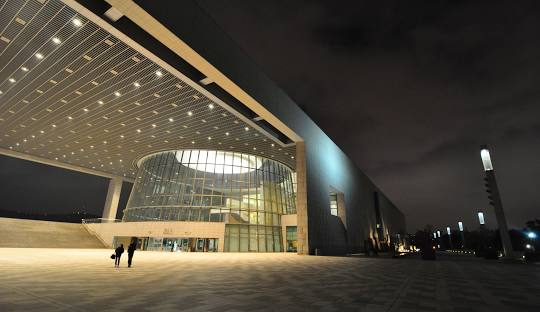
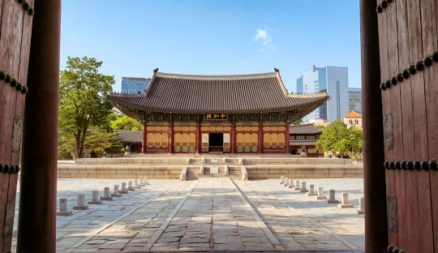

Najpoznatije znamenitosti
Među najpoznatijim znamenitostima su palača Gyeongbokgung, otok Jeju, N Seoul Tower i parkovi poput Seoraksan Nacionalnog parka.
Gyeongbokgung palača
Gyeongbokgung palača, smještena u središtu Seoula, jedan je od najvažnijih povijesnih simbola Južne Koreje. Izgrađena 1395. godine tijekom dinastije Joseon, palača je služila kao rezidencija kraljevske obitelji i središte vlasti. Njeno ime, koje u prijevodu znači "Palača blagoslova i sreće," odražava njezinu važnost u korejskoj povijesti i kulturi. Unutar kompleksa nalazi se više od 7,700 prostorija, a poseban značaj ima Geunjeongjeon, glavna dvorana gdje su se održavali važni državni obredi i sastanci. Palača je također poznata po prekrasnom vrtu i paviljonu Gyeonghoeru, smještenom na otoku usred jezera. Ovaj paviljon pruža nevjerojatan pogled na okolicu i često je korišten za bankete i ceremonije. Gyeongbokgung palača simbol je otpornosti korejskog naroda, budući da je tijekom japanske okupacije pretrpjela značajna oštećenja. Međutim, zahvaljujući opsežnim restauracijama, palača je danas gotovo u potpunosti obnovljena i otvorena za javnost. Posjetitelji mogu uživati u tradicionalnim kostimima Hanbok, istražiti bogatu povijest palače te prisustvovati promjeni straže, što je jedna od omiljenih atrakcija. Palača Gyeongbokgung nezaobilazno je odredište za sve koji žele istražiti kulturno nasljeđe Južne Koreje i osjetiti duh njezine prošlosti.
N Seoul Tower
N Seoul Tower, poznat i kao Namsan Seoul Tower, jedan je od najpoznatijih simbola glavnog grada Južne Koreje. Smješten na vrhu planine Namsan, ovaj toranj visok 236 metara pruža zadivljujući panoramski pogled na Seoul i okolna područja. Izgrađen 1969. godine, prvotno je služio kao komunikacijski toranj, a danas je popularno turističko odredište koje godišnje privlači milijune posjetitelja. Jedna od glavnih atrakcija tornja je rotirajući restoran, gdje gosti mogu uživati u korejskim specijalitetima dok promatraju prekrasan pogled na grad. Na obližnjoj platformi ljubavni parovi često ostavljaju „lokote ljubavi“ kao simbol vječne odanosti. N Seoul Tower postaje posebno romantičan tijekom večeri kada se osvijetli spektakularnim svjetlosnim instalacijama.
National Museum of Korea
Nacionalni muzej Koreje najveći je i najvažniji muzej u zemlji, smješten u Seoulu. Osnovan 1945. godine, muzej čuva više od 220.000 povijesnih artefakata koji obuhvaćaju tisuće godina korejske povijesti i kulture. Muzej je podijeljen u tri glavne galerije: arheološku, povijesnu i umjetničku, pružajući sveobuhvatan uvid u razvoj korejske civilizacije. Posebno su impresivni izložci poput zlatnih kruna iz doba Sille, Budinih skulptura i antičkih keramičkih predmeta. Osim stalnog postava, muzej redovito organizira međunarodne izložbe i edukativne radionice za posjetitelje svih uzrasta.
Deoksugung Palace
Deoksugung palača, smještena u samom središtu Seoula, jedinstvena je po svom spoju tradicionalne korejske i zapadne arhitekture. Ova palača bila je rezidencija članova kraljevske obitelji tijekom kasnog razdoblja dinastije Joseon. Njeno ime, koje znači „Palača dugovječnosti i mira,“ simbolizira njezinu povijesnu ulogu. Jedna od glavnih atrakcija palače je tradicionalna ceremonija smjene straže, koja se redovito održava ispred glavnog ulaza Daehanmun. Palača je okružena prekrasnim vrtovima i fontanama, a noću je osvijetljena, stvarajući čaroban ugođaj. Deoksugung je nezaobilazna lokacija za one koji žele istražiti povijesno srce Južne Koreje.